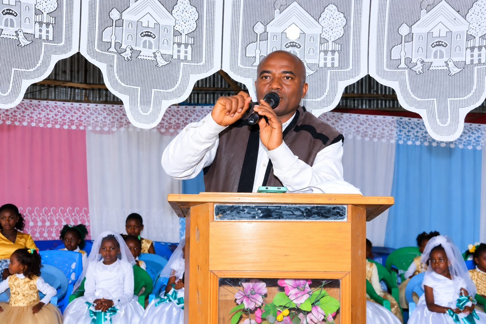
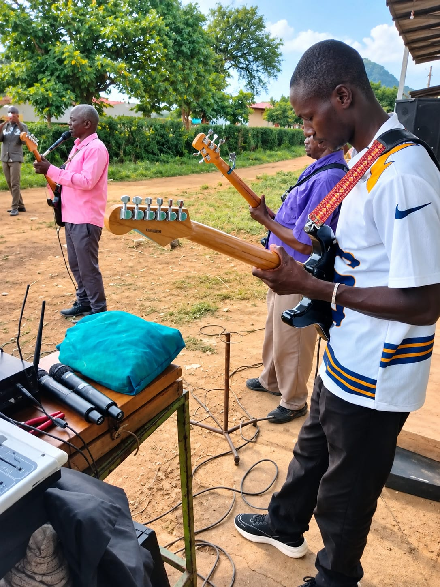
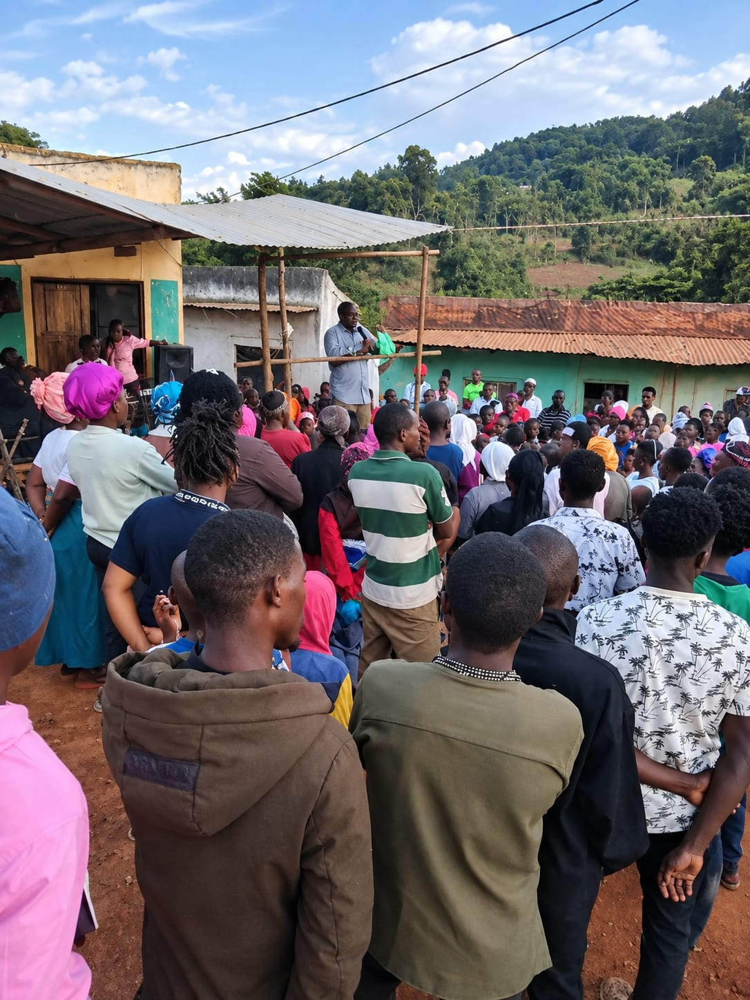
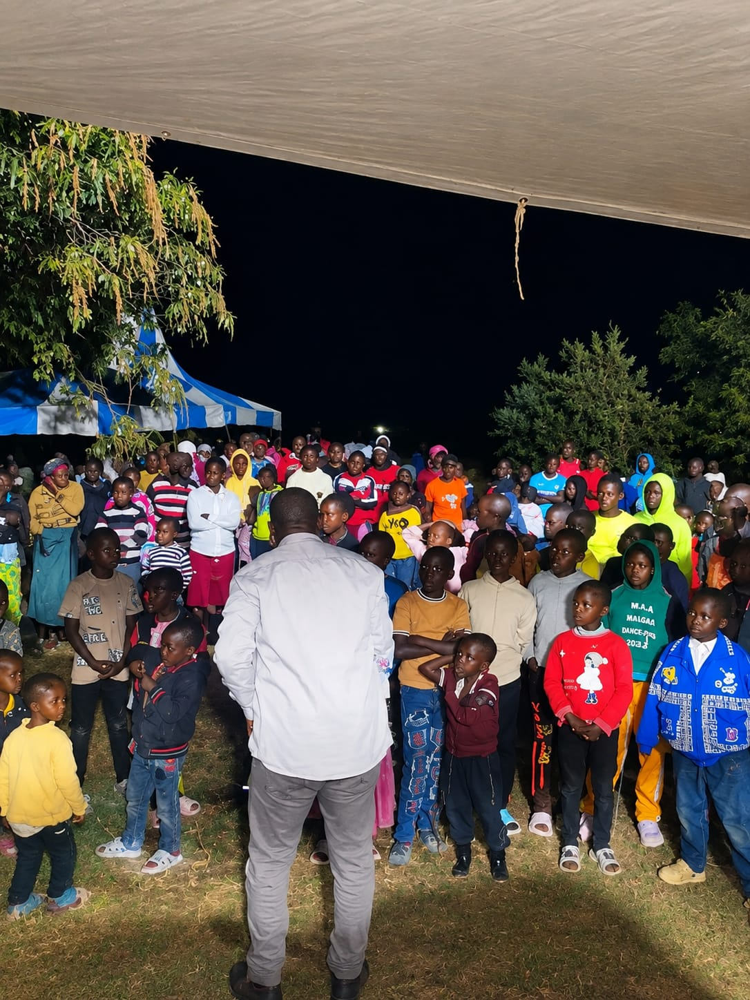
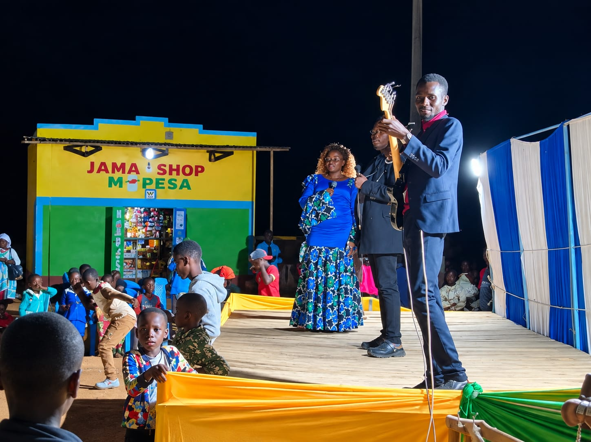
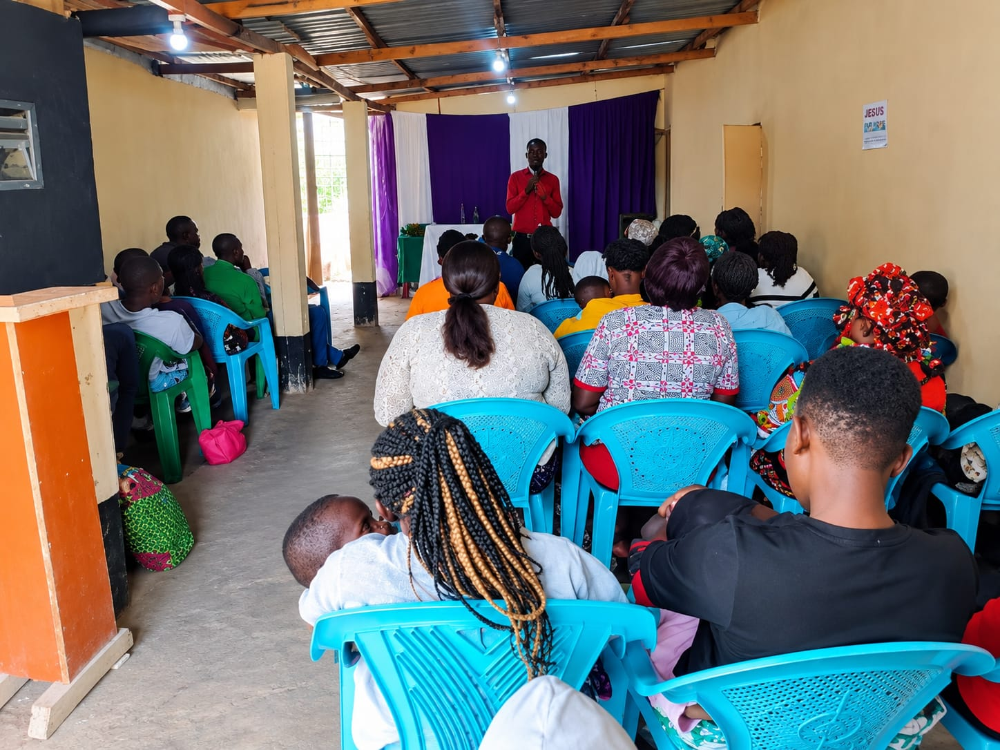

"I am the Lord who heals you." — Exodus 15:26
Yahweh Healing Ministry was founded in 2008 by Apostle Barnabus Matundu, planted here in Nziu with a simple conviction: that the God who healed His people at Marah is the same God who heals, restores, and provides today.
What began as a small gathering of believers has grown into a congregation rooted in prayer, the teaching of God's Word, and practical care for the surrounding community — reaching families across Wote/Nziu Ward and beyond.

Apostle Barnabus Matundu, Founder
Listen to his songs on YouTube
We hold to the authority of Scripture, the healing power of Christ, and the call to worship, serve, and grow together as one body.
Founded and led by Apostle Barnabus Matundu.
Teachers: Isaac Maithya, Norah Muema, Morris Kimosi, Purity Mbulu, Minoo Mutunga, Faith Muema. Inquiries: Isaac Maithya, 0759 871 790.
Ongoing weekly gatherings — check with the church office for special programs and revivals.
Your giving supports the ministry's work in Nziu and beyond. You can give directly via M-Pesa:
The people serving in each ministry. Reach out if you'd like to get involved.
Timothy Maithya
Eunice Mwanzia
Purity Katunge
Timothy Maithya
Isaac Maithya
Morris Kimosi
Abbigail Minoo
Kennedy Wambua
Joyce Nzioki
Ann Mutinda
Patrick Kimosi
Geoffrey Kivuva
Philip Mutunga
Reach out by phone or WhatsApp — we'd love to pray with you or answer your questions.




